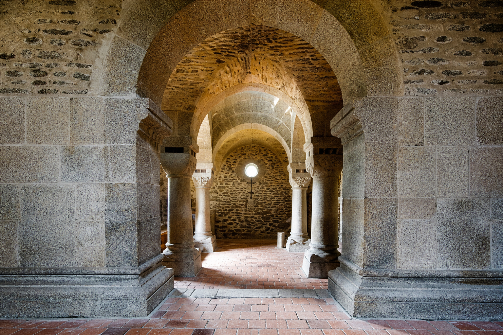

TOSTA Plesná
Kompletní industriální elektroinstalace v rekonstruované textilní továrně: silnoproud, požární rozvody, EPS, EZS a nouzové osvětlení.
Vybrané novinky a realizace. Další fotografie najdete v sekci Realizace.
Kompletní industriální elektroinstalace v rekonstruované textilní továrně: silnoproud, požární rozvody, EPS, EZS a nouzové osvětlení.

Projekční příprava elektroinstalace stálé výstavy včetně řízení osvětlení a multimédií přes DALI.

Vlastní fotovoltaická elektrárna v Chebu — energii pro projekční práci získáváme ze slunce.

Rekonstrukce kaple sv. Erharda a Uršuly — podlaha, střecha, osvětlení — a otevření před sezónou.
Potřebujete podobnou realizaci? Napište poptávku nebo volejte +420 354 437 476.